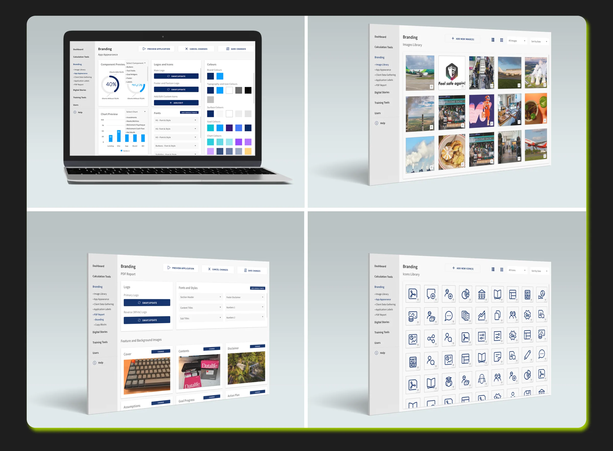

Problem Statement
How might we help the client to manage their web applications with ease using advance tools which are simple to use with very minimal technical background?
Role & Responsibilities
As the Lead Product Designer, I directed the end-to-end design of an admin portal, collaborating with PMs, engineers, and client stakeholders. I conducted user interviews, performed benchmarking, and led ideation sessions to define system requirements. I created prototypes, facilitated design reviews, and oversaw handoff to engineering. The new portal streamlined operations, improved usability, and served as a key internal tool for financial advisors.
Research, Options & Trade-offs
What research revealed
Client admins weren't technical. Configuration screens written for engineers were the main blocker.
Directions explored
- Option A: Expose every setting on one page. Dropped: overwhelming.
- Option B: Task-based sections with sensible defaults and contextual help. Chosen.
Trade-offs
Advanced configuration stayed behind an "advanced" area to keep the main paths simple, and was designed mobile-responsive rather than as a separate native app.
High-Fidelity Designs
A much more simplified and straight to the point onboarding experience along with available support whenever it is needed.
